human_mitosis
Publiek 2D-voorbeeld
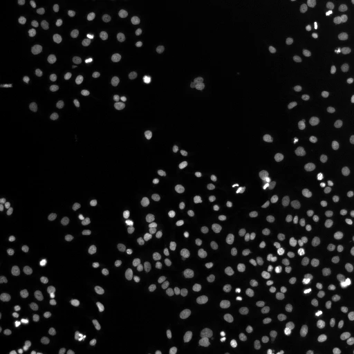
27 voorbeelden met structuren van hele coupes tot ultrastructuur. Kies een label om de echte voorspelling, prompt en herkomst te bekijken.

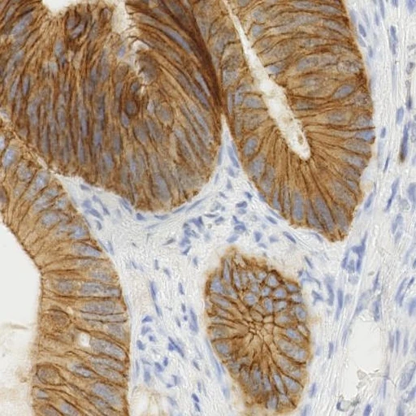
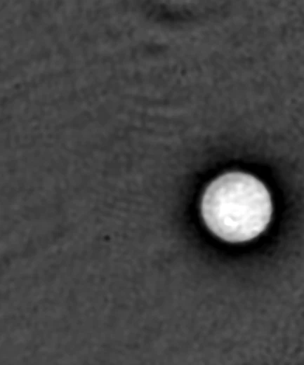
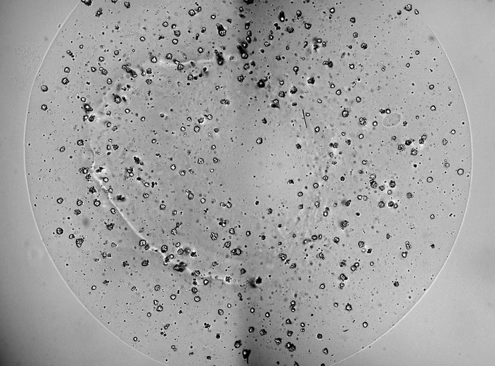
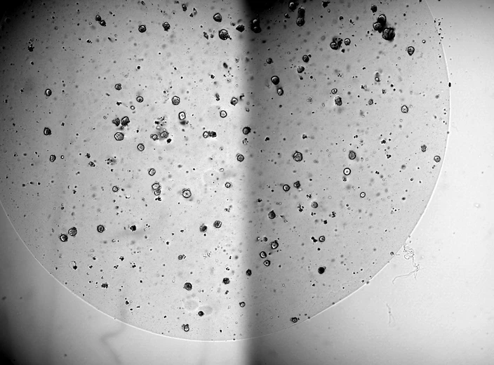
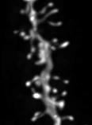
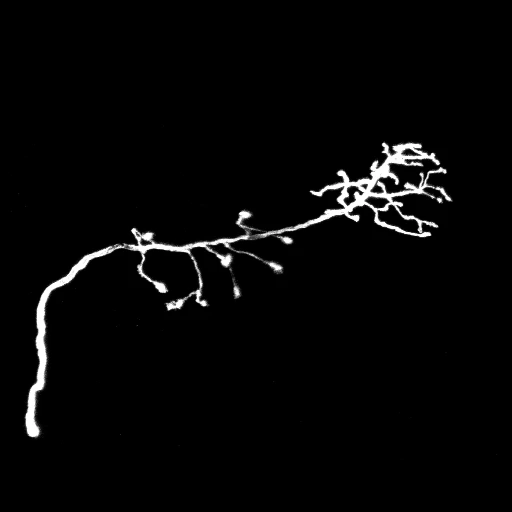
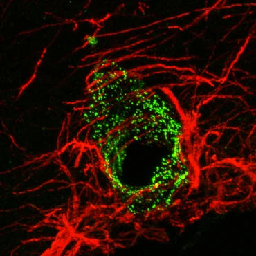
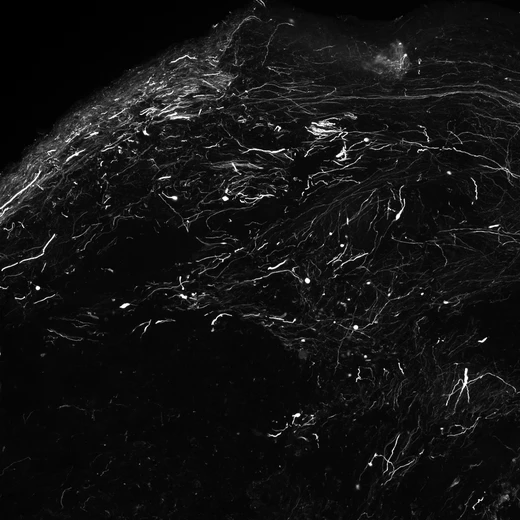
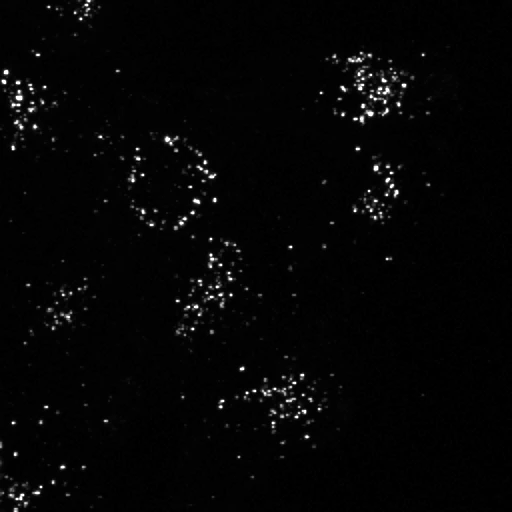
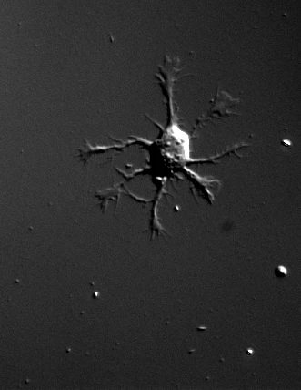
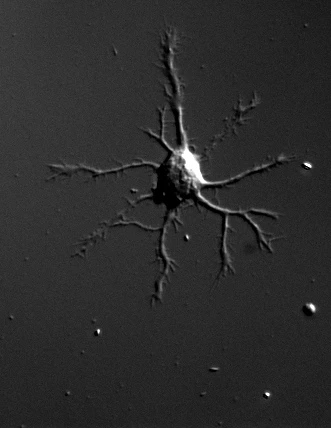
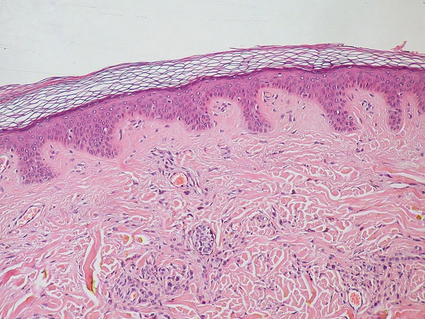
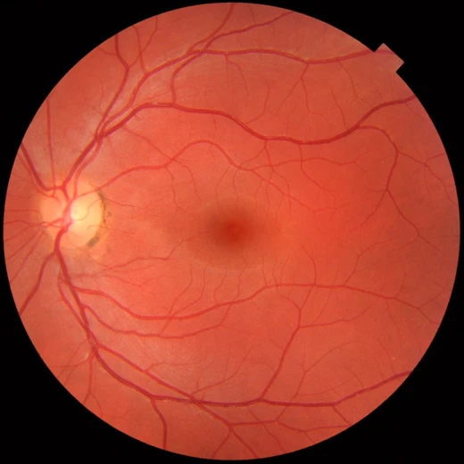

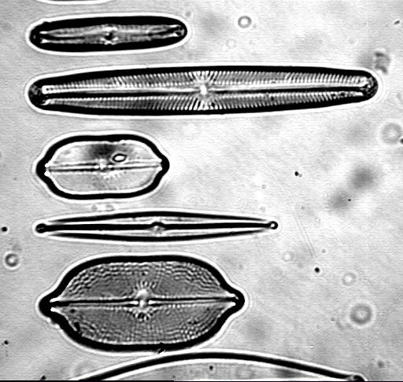
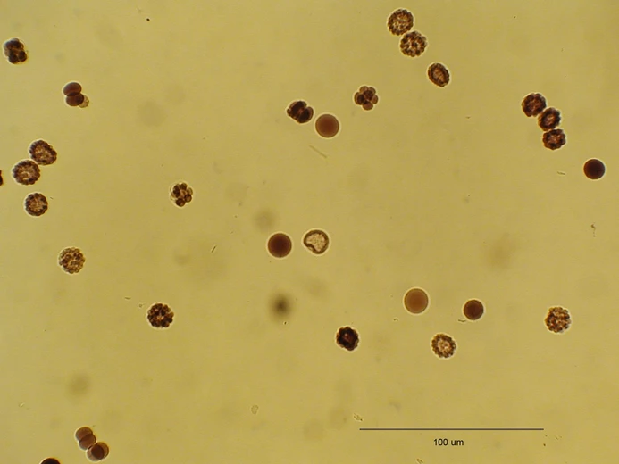
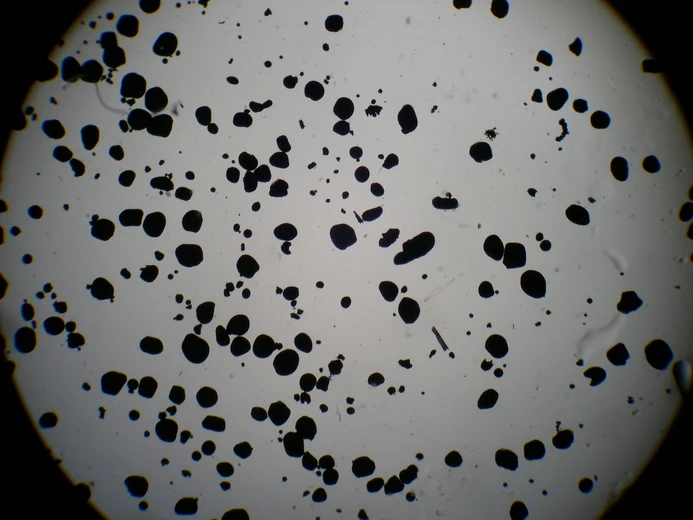
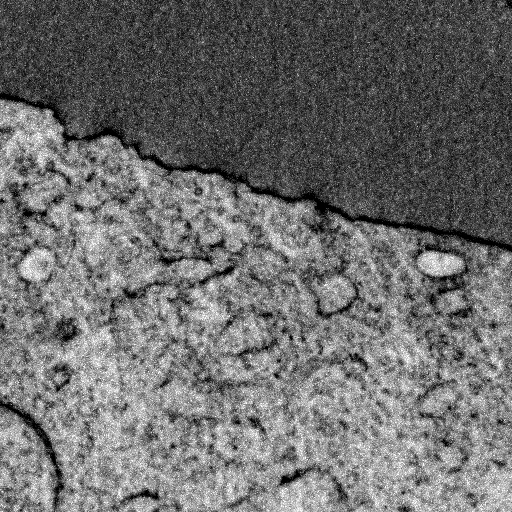
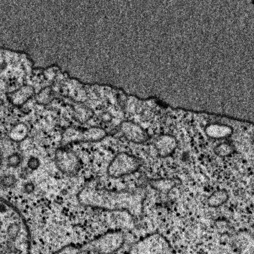
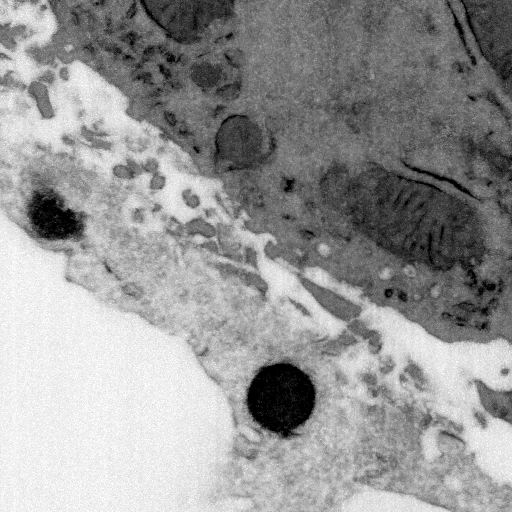
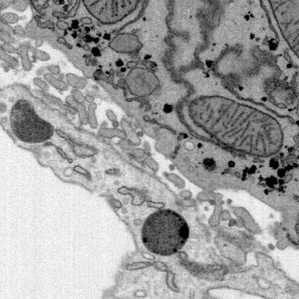
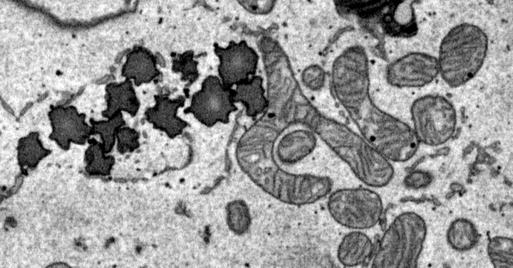
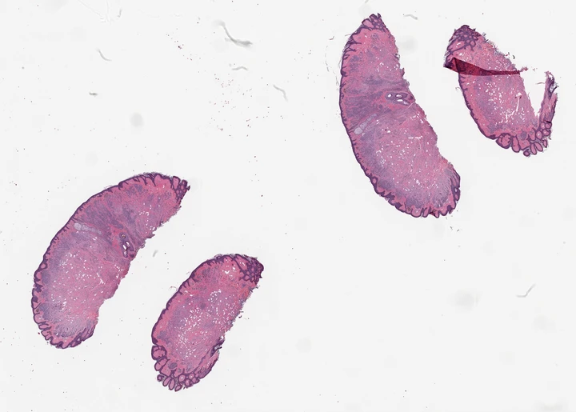
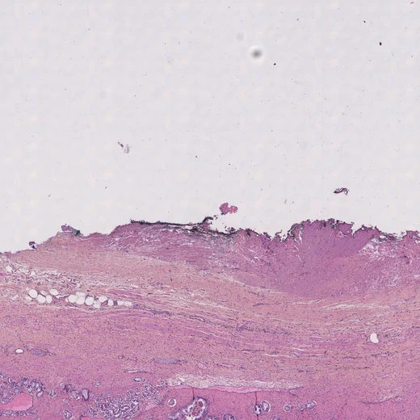
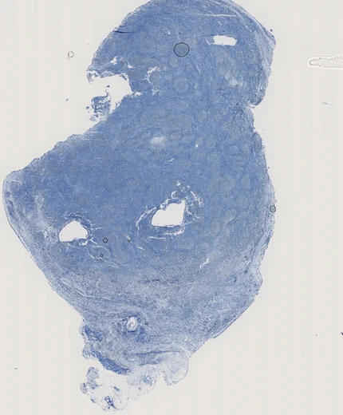
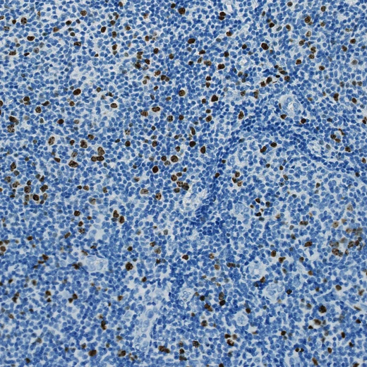